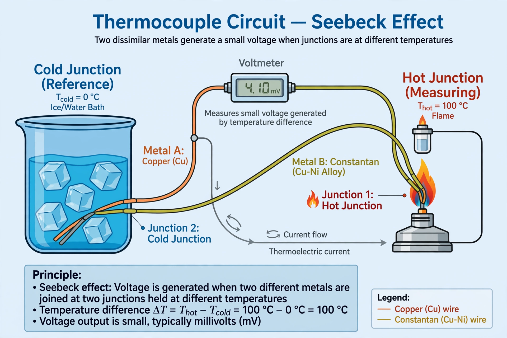

| Components | Seebeck effect, Peltier effect, Thomson effect |
|---|---|
| Discovered | 1821 (Seebeck), 1834 (Peltier), 1851 (Thomson) |
| Key quantity | Seebeck coefficient (µV/K) |
| Applications | Thermocouples, thermoelectric generators, Peltier coolers |
The thermoelectric effect is the direct conversion of temperature differences to electric voltage and vice versa via a thermocouple. A thermoelectric device creates a voltage when there is a different temperature on each side; conversely, when a voltage is applied to it, heat is transferred from one side to the other.
The term "thermoelectric effect" encompasses three separately identified phenomena: the Seebeck effect, the Peltier effect, and the Thomson effect. The Seebeck and Peltier effects are different manifestations of the same physical process; textbooks sometimes refer to this as the Peltier–Seebeck effect.
The Seebeck effect is the electromotive force (emf) that develops across two points of an electrically conducting material when there is a temperature difference between them. It is named after the German physicist Thomas Johann Seebeck, who in 1821 discovered that a compass needle placed near a closed circuit of two dissimilar metals would be deflected when one junction was heated.
The emf is proportional to the temperature difference: the constant of proportionality is the Seebeck coefficient (also called thermopower). In a circuit of two different conductors A and B with junctions at temperatures T1 and T2, the open-circuit voltage depends on the difference of the materials' Seebeck coefficients integrated over the temperature range. Practical metals give a few microvolts per kelvin; semiconductors such as bismuth telluride give much larger values, of the order of hundreds of microvolts per kelvin.
The Peltier effect is the presence of heating or cooling at an electrified junction of two different conductors. It was discovered by Jean Charles Athanase Peltier in 1834. When a current flows through a junction of two dissimilar conductors, heat is either absorbed or released at a rate proportional to the current. The Peltier effect is the basis of solid-state Peltier coolers used in portable refrigerators, CPU cooling, and temperature-stabilised laser diodes.
The Thomson effect, predicted and observed by William Thomson (Lord Kelvin) in 1851, describes the heating or cooling of a current-carrying conductor with a temperature gradient along its length. Thomson also derived the relations connecting the Seebeck, Peltier and Thomson coefficients, showing they are not independent.
The usefulness of a material is gauged by its dimensionless figure of merit, ZT, which rises with electrical conductivity and Seebeck coefficient and falls with thermal conductivity. Commercial devices use bismuth telluride alloys near room temperature; silicon-germanium alloys are used in high-temperature space applications. Conversion efficiencies are typically only 5–8%, so thermoelectric generators are used mainly where reliability matters more than efficiency.
See also: Thermocouple · Pyroelectricity · Thermionic emission